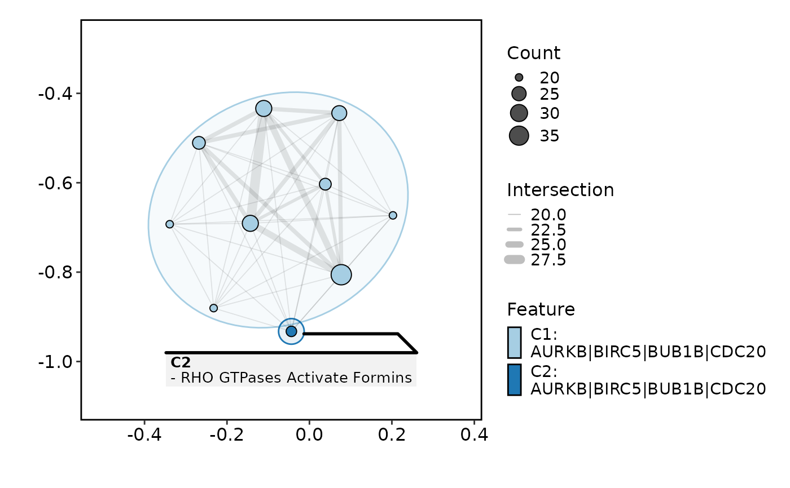
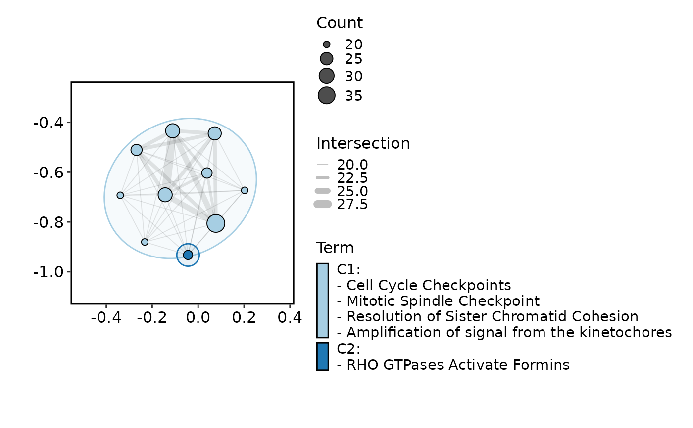
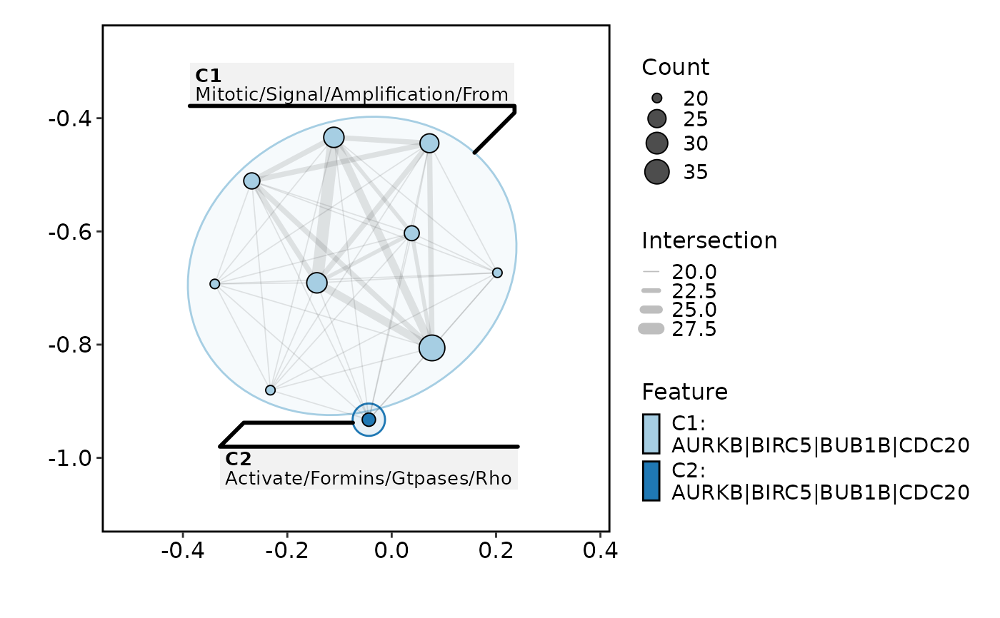
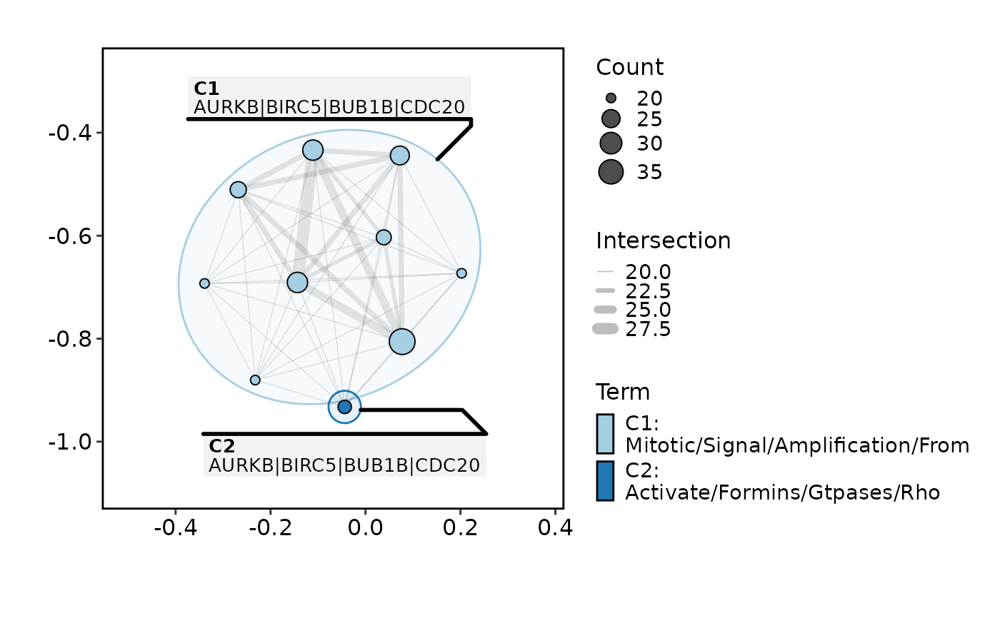
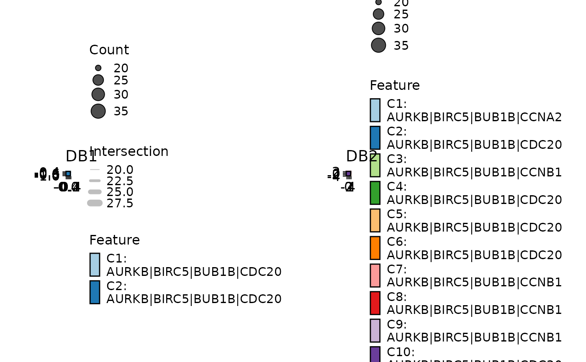
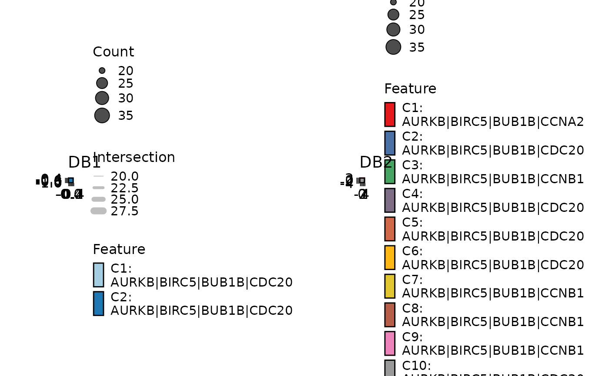
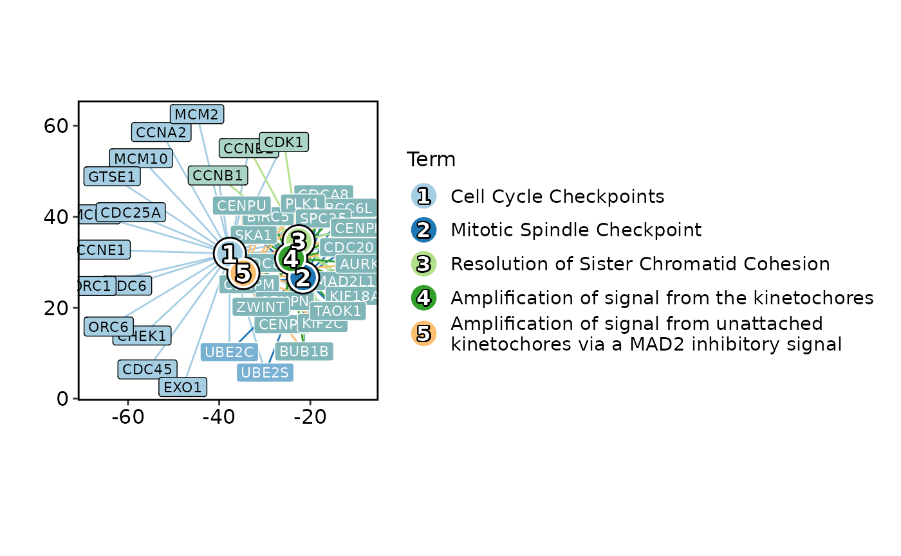

EnrichMap is a function to plot the enrichment map.
EnrichNetwork is a function to plot the enrichment network.
Usage
EnrichMap(
data,
in_form = c("auto", "clusterProfiler", "clusterprofiler", "enrichr"),
split_by = NULL,
split_by_sep = "_",
top_term = 10,
metric = "p.adjust",
layout = "fr",
minchar = 2,
cluster = "fast_greedy",
show_keyword = FALSE,
nlabel = 4,
character_width = 50,
mark = "ellipse",
label = c("term", "feature"),
labelsize = 5,
expand = c(0.4, 0.4),
theme = "theme_this",
theme_args = list(),
palette = "Paired",
palcolor = NULL,
alpha = 1,
aspect.ratio = 1,
legend.position = "right",
legend.direction = "vertical",
title = NULL,
subtitle = NULL,
xlab = NULL,
ylab = NULL,
seed = 8525,
combine = TRUE,
nrow = NULL,
ncol = NULL,
byrow = TRUE,
axes = NULL,
axis_titles = axes,
guides = NULL,
design = NULL,
...
)
EnrichNetwork(
data,
in_form = c("auto", "clusterProfiler", "clusterprofiler", "enrichr"),
split_by = NULL,
split_by_sep = "_",
top_term = 10,
metric = "p.adjust",
character_width = 50,
layout = "fr",
layoutadjust = TRUE,
adjscale = 60,
adjiter = 100,
blendmode = "blend",
labelsize = 5,
theme = "theme_this",
theme_args = list(),
palette = "Paired",
palcolor = NULL,
alpha = 1,
aspect.ratio = 1,
legend.position = "right",
legend.direction = "vertical",
title = NULL,
subtitle = NULL,
xlab = NULL,
ylab = NULL,
seed = 8525,
combine = TRUE,
nrow = NULL,
ncol = NULL,
byrow = TRUE,
axes = NULL,
axis_titles = axes,
guides = NULL,
design = NULL,
...
)Arguments
- data
A data frame containing the data to be plotted. It should be in the format of clusterProfiler enrichment result, which includes the columns: ID, Description, GeneRatio, BgRatio, pvalue, p.adjust, qvalue, geneID and Count.
The
ID,qvalueandCountcolumns are optional.The
Descriptionis the description of the term.The
GeneRatiois the number of genes in the term divided by the total number of genes in the input list.The
BgRatiois the number of genes in the term divided by the total number of genes in the background list (all terms).The
Countcolumn, if given, should be the same as the first number in GeneRatio.
If you have enrichment results from multiple databases, you can combine them into one data frame and add a column (e.g. Database) to indicate the database. You can plot them in a single plot using the
split_byargument (e.g.split_by = "Database").- in_form
A character string specifying the input format. Either "auto", "clusterProfiler", "clusterprofiler" or "enrichr". The default is "auto", which will try to infer the input format.
- split_by
The column(s) to split data by and plot separately.
- split_by_sep
The separator for multiple split_by columns. See
split_by- top_term
An integer specifying the number of top terms to show.
- metric
A character string specifying the metric to use for the size of the nodes. It is also used to order the terms when selected the top terms. Either "pvalue" or "p.adjust". The default is "p.adjust".
- layout
A character string specifying the layout of the graph. Either "circle", "tree", "grid" or other layout functions in
igraph.- minchar
An integer specifying the minimum number of characters to show in the keyword.
- cluster
A character string specifying the clustering method. Either "fast_greedy", "walktrap", "edge_betweenness", "infomap" or other clustering functions in
igraph.- show_keyword
A logical value specifying whether to show the keyword instead of Description/Term in the plot.
- nlabel
An integer specifying the number of labels to show in each cluster.
- character_width
The width of the characters used to wrap the keyword.
- mark
A character string specifying the mark to use for the nodes. Either "ellipse", "rect", "circle", "text" or other mark functions in
ggforce.- label
A character string specifying the label to show in the legend. Either "term" or "feature". The default is "term".
- labelsize
A numeric value specifying the size of the label.
- expand
The values to expand the x and y axes. It is like CSS padding. When a single value is provided, it is used for both axes on both sides. When two values are provided, the first value is used for the top/bottom side and the second value is used for the left/right side. When three values are provided, the first value is used for the top side, the second value is used for the left/right side, and the third value is used for the bottom side. When four values are provided, the values are used for the top, right, bottom, and left sides, respectively. You can also use a named vector to specify the values for each side. When the axis is discrete, the values will be applied as 'add' to the 'expansion' function. When the axis is continuous, the values will be applied as 'mult' to the 'expansion' function. See also https://ggplot2.tidyverse.org/reference/expansion.html
- theme
A character string or a theme class (i.e. ggplot2::theme_classic) specifying the theme to use. Default is "theme_this".
- theme_args
A list of arguments to pass to the theme function.
- palette
A character string specifying the palette to use. A named list or vector can be used to specify the palettes for different
split_byvalues.- palcolor
A character string specifying the color to use in the palette. A named list can be used to specify the colors for different
split_byvalues. If some values are missing, the values from the palette will be used (palcolor will be NULL for those values).- alpha
A numeric value specifying the transparency of the plot.
- aspect.ratio
A numeric value specifying the aspect ratio of the plot.
- legend.position
A character string specifying the position of the legend. if
waiver(), for single groups, the legend will be "none", otherwise "right".- legend.direction
A character string specifying the direction of the legend.
- title
A character string specifying the title of the plot. A function can be used to generate the title based on the default title. This is useful when split_by is used and the title needs to be dynamic.
- subtitle
A character string specifying the subtitle of the plot.
- xlab
A character string specifying the x-axis label.
- ylab
A character string specifying the y-axis label.
- seed
The random seed to use. Default is 8525.
- combine
Whether to combine the plots into one when facet is FALSE. Default is TRUE.
- nrow
A numeric value specifying the number of rows in the facet.
- ncol
A numeric value specifying the number of columns in the facet.
- byrow
A logical value indicating whether to fill the plots by row.
- axes
A string specifying how axes should be treated. Passed to
patchwork::wrap_plots(). Only relevant whensplit_byis used andcombineis TRUE. Options are:'keep' will retain all axes in individual plots.
'collect' will remove duplicated axes when placed in the same run of rows or columns of the layout.
'collect_x' and 'collect_y' will remove duplicated x-axes in the columns or duplicated y-axes in the rows respectively.
- axis_titles
A string specifying how axis titltes should be treated. Passed to
patchwork::wrap_plots(). Only relevant whensplit_byis used andcombineis TRUE. Options are:'keep' will retain all axis titles in individual plots.
'collect' will remove duplicated titles in one direction and merge titles in the opposite direction.
'collect_x' and 'collect_y' control this for x-axis titles and y-axis titles respectively.
- guides
A string specifying how guides should be treated in the layout. Passed to
patchwork::wrap_plots(). Only relevant whensplit_byis used andcombineis TRUE. Options are:'collect' will collect guides below to the given nesting level, removing duplicates.
'keep' will stop collection at this level and let guides be placed alongside their plot.
'auto' will allow guides to be collected if a upper level tries, but place them alongside the plot if not.
- design
Specification of the location of areas in the layout, passed to
patchwork::wrap_plots(). Only relevant whensplit_byis used andcombineis TRUE. When specified,nrow,ncol, andbyroware ignored. Seepatchwork::wrap_plots()for more details.- ...
Additional arguments.
- layoutadjust
A logical value specifying whether to adjust the layout of the network.
- adjscale
A numeric value specifying the scale of the adjustment.
- adjiter
A numeric value specifying the number of iterations for the adjustment.
- blendmode
A character string specifying the blend mode of the colors. Either "blend", "average", "multiply" and "screen".
Examples
# \donttest{
data(enrich_example)
EnrichMap(enrich_example)

EnrichMap(enrich_example, label = "feature")

EnrichMap(enrich_example, show_keyword = TRUE, label = "term")

EnrichMap(enrich_example, show_keyword = TRUE, label = "feature")

data(enrich_multidb_example)
EnrichMap(enrich_multidb_example, split_by = "Database")

EnrichMap(enrich_multidb_example, split_by = "Database",
palette = list(DB1 = "Paired", DB2 = "Set1"))

# }
# \donttest{
EnrichNetwork(enrich_example, top_term = 5)

# }